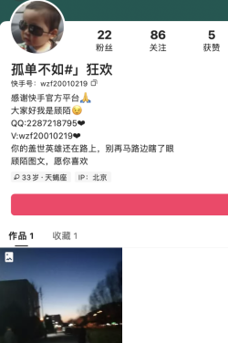
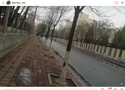
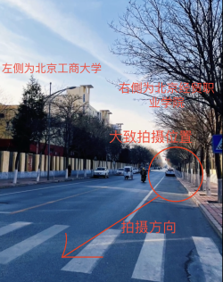
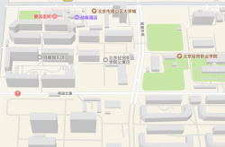

首页
迫害加速 ～ persecute drive
鉴于本页面涉及人士娱乐性较强，故建议任何人在本模板删除之前对其实施包括但不限于下列娱乐活动：
- 资料整理
- 素材开发
- 高雅创作
- 午夜凶铃
- 美宅摄影
- 送餐投诉
- 发送美图
- 联系教友
- 向有关部门检举其三退问题
- 向敌方坐骑传播女权主义思潮
伍章峰（2001.12.28—？），广西全州人，非全日制大专学历。曾就读于北京经贸职业学院18级高级乘务班，现就职于广西京东信成供应链科技有限公司。洼地生育爱好者，外卖狗，去仑力学员。
| 伍章峰 | |
|---|---|
|
大和樱
| |
| 姓名 | 伍章峰 |
| 常用ID | 侍弄 侍权 楠筱 楠筱曉 暨绾 永寡 凌耀 WIkL 沫小萌 孤单不如#』狂欢 顾陌 如兮 氧气和你 皮皮峰我们走 |
| 职业 | 外卖狗 英雄坦克手 节肢动物饲养员 |
| 能力 | 摁f进入重坦 steam游戏作弊 |
| 特长 | 未婚造人 |
| 必杀技 | 转去仑 |
| 所属 | 纽约州龙泉寺广西分寺 |
滑稽生平
2016年12月29日，在伍章峰刚过完十五岁生日的第二天，出走大女主周春秀无法忍受烂爹伍太岑在家庭小王国里的爹味统治，毅然奔赴全州县民政局办理离婚手续。大女主成功逃离伍太岑的父权制家庭，给伍章峰本就扭曲的心灵烫上了“单亲孤儿”的烙印。
伍章峰在完成九年义务教育后，由于成绩、智商和德行等种种原因，无法顺利通过中考升入高中或中专就读，但民办院校北京经贸职业学院向其伸出了橄榄枝（收款码），让其就读于该校的18级高级乘务班。但幽默的是，伍章峰无法从在该校的学习中获得任何有效的学籍或毕业证明，仍然需要通过成人教育取得其大专毕业证。其人在高级乘务班结业后，无缘于北京的就业市场，最终实现了他想回到广西南宁“做渣男”的理想抱负。
2024年中旬，伍章峰和梁英英开始乱搞，贱男贱女为了点自私的性冲动就直接摘套中出，让前现代支女梁英英挺着几个月大的肚子于2024年11月12日成为了洼地婚育率的救火队员。在小蜘蛛伍翊航被搞下来的四个月后，烂爹伍章峰终于结束了他的无业生涯，成为了一名力工外卖狗，哥布林巢穴里唯一个有职工医保的就业人口，供养着一个低学历无业的宝妈梁英英。在未来无人机即将取代简单体力劳动的大时代，不知道小蜘蛛伍翊航还没有机会穿上和他烂爹一样的屎红色京东外卖制服，，，
哥布林巢穴图鉴
伍章峰
- 姓名：伍章峰
- 神必代码:450324********5854
- 出厂日期：2001年12月28日
- 快打热线：19897669623、15578075818、17677607479、151****1345、193****9064、18230603510（易主）、18798429414（易主）
- 邮箱：2287218795@qq.com
- 政治身份：疑似前团员，现已三退成为去仑力学员
- 良民证地址：广西全州县文桥镇文桥村委宅地村12-88号
- 医保登记户口:广西全州县文桥镇文桥村委鱼池福
- 文化程度：国家开放大学行政管理专业（非全日制专科），于2023年1月20日毕业，无学位证
- 曾读院校：北京经贸职业学院 18级高级乘务班（无学籍）
- 工作单位：广西京东信成供应链科技有限公司
- 公积金账号：100987044501 个人和单位存放分别缴费5%，即110元
- 外卖狗变身日：2025年7月
- 婚驴变身日:2024年11月12日
- 小蜘蛛繁殖日:2025年3月13日
- QQ号：
- QQ1:2287218795 、昵称：楠筱、曾用密码:wzf20010219.、wzf20010219..、绑定手机15578075818
- QQ2:3199773717、昵称：沫小萌，绑定手机17677607479
- 快手号：
- 快手账号1：1880113796、昵称:WikL、绑定手机19897669623
- 快手账号2：wzf20010219、昵称:孤单不如#』狂欢、绑定手机17677607479、ip北京
- 快手账号3: ioyy0202、昵称：侍弄
- 抖音账号：
- 抖音账号1：83812429105、昵称：楠筱
- B站账号:
- B站账号uid：1178465801、昵称：楠筱曉
- stean账号：
- 个人资料URL：2287218795、昵称：皮皮峰我们走（一个记录在案的游戏封禁）
敌方坐骑梁英英
- 姓名：梁英英
- 神必代码：450106********2046
- 出厂日期：2002年2月18日
- 风俗热线：15177761033
- 出生地：南宁市永新区
- 文化程度：无法查询到本科、大专及以上学历
- 婚驴变身日：2024年11月12日、西乡塘民政局
- 小蜘蛛繁殖日：2025年3月13日，单胎顺产，南宁市第二人民医院住院三天，个人支出2361.21元
- 工作单位：无职工医保、公积金，城乡医保正常
- 洼地户籍：西乡塘区石埠街道办事处忠良村3队49号。
- 快手账号：lyy965847、昵称:清梦
- 快手账号2：2024043754、昵称：LikW
- 抖音账号：ganjing60526、昵称:甜柚
- 淘宝账号：3132032685、昵称:九离丷
- 支付宝名称：清梦丷
城中村小蜘蛛伍翊航
- 姓名：伍翊航
- 神必代码：450107********481X
- 出厂日期：2025年3月13日
Incel烂爹伍太岑
- incel烂爹：伍太岑
- 神必代码：452323********5818
- 出厂日期：1979年5月29日
- 教子无方热线：13152661759
- 工作单位：现无医保公积金
- 文化程度：无法查询到本科、大专及以上学历
- 哥布林巢穴：广西区南宁市江南区淡村一里64号楼
- 洼地户籍:全州县文桥镇文桥村委宅地村12-88号
- 父权制家庭解体时间:2016年12月29日
- 出走大女主:周春秀 452323197808085827
- 离婚登记单位:全州县民政局婚姻登记处
- Qq：1559958847
- 抖音：dyii5ldgeiue、昵称：感恩有你
- 快手1：1643783428、昵称：伍太岑551
- 快手2：1576295142、昵称：伍太岑
伍章峰苗床周春秀
- 神必代码：452323********5827
- 出厂日期：1987年8月8日
- 生育热线:15277001759
- 文化程度：无法查询到本科、大专及以上学历
- 洼地户籍：桂林市全州县文桥镇百仁村周家圩村05－06号
- 洼地住址:南宁兴宁区东州路瀚林美筑32号
- 婚驴轮回时间：2020年4月8日、良庆区民政局
- 男方姓名：杨长翰
伍章峰继父杨长翰
- 神必代码：450121********6312
- 出生日：1986年12月9日
- 洼地户籍:南晓镇团成村那全坡27号
- 技能：寝取（Netori）伍太岑
伍章峰岳父梁梓斌
- 神必代码：450111********0615
- 出厂日期：1978年12月04日
- 斩杀热线：13659618204
- 文化程度：无法查询到本科、大专及以上学历
- 洼地户籍：西乡塘区石埠街道办事处忠良村3队49号
- 住址：南宁市兴宁区邕武路3－1号南宁市环卫公寓公共租赁房项目1号楼2单元2717号
- 燃气代码：1102883512、客户编号：272578466757820425，有燃气余额。
- 离婚日期2016年10月8日，原配偶：韦秀花，西乡塘区民政局婚姻登记
伍章峰岳母韦秀花
- 神必代码：452727********0167
- 出厂日期：1980年12月22日
- 训婿热线：15289640181
- 文化程度：无法查询到本科、大专及以上学历
- 洼地户籍：南宁市西乡塘区石埠街道办事处忠良村3队49号
- 离婚时间：2016年10月8日，原配偶：梁梓斌，西乡塘区民政局婚姻登记处
- 再婚时间：2018年02月24日
- 男方姓名: 易文意
梁英英继父易文意
- 男方代码: 452727********0015
- 出生日期：1982年4月24日
- 男方户籍: 广西凤山县凤城镇拉仁村后峒屯123-1号
伍章峰小舅子梁永永
- 姓名：梁永永
- 支国代码：450107********4811
- 出厂日期：2007年9月6日
伍章峰专科学历考
笔者在调查哥布林事迹的过程中发现，北京经贸职业学院的官网在2020年3月31日发布的一篇文章《云团日 | 团结“艺”心聚能量（一）》中出现“作者：伍章峰 18高级乘务班团支部”的内容：
那么这个“伍章峰”是不是伍寇维基的伍章峰呢？
已知伍章峰手机号17677607479绑定的快手号为wzf20010219：

该快手账号展示的QQ号2287218795（昵称楠筱）绑定的手机号为15578075818，“v：wzf20010219”为其q号曾用密码；此人b站uid为1178465801、昵称：楠筱曉，该头像与qq号2287218785相同。可以确定该快手账号为伍章峰注册，其ip属地显示为北京。
打开其人发布的视频我们可以发现伍章峰称“我想回去做渣男了#广西南宁”：
以及其发布的街景图片：

结合街景图片可以发现该图片为伍章峰沿着荷园北路自西向东拍摄：

北京经贸职业学院位于荷源北路北侧：

那么我们可以由此判断伍章峰的大专就读于该校吗？
根据北京经贸职业学院官网发布的信息，可知伍章峰为该校2018级学生。考虑到此人于2001年12月28日出生，2018年正好位于伍章峰刚完成其九年义务教育的这一时间节点上，那么此人是如何绕开中专去上一个民办大专院校的呢，其形体条件又是否满足乘务专业的要求？
笔者抱着疑问通过学信网接口找到了这一问题的答案，发现伍圣的最终学历为国家开放大学的行政管理专业的非全日制大专。那么由此可推知，北京经贸职业学院的高级乘务班可能并非该校统招入学的正式专业，其性质类似某种私办教育机构的“培训班”课程，往往以“能拿到大专学历”为幌子，专门招收一些无法考入中专的学生，以此作为报名成人教育的跳板。虽说伍章峰就读于该校的“高级乘务班”，但却无法取得该校相关的学籍学历，只能通过所谓的“国家开放大学”完成其成人教育。
鉴于北京地区昂贵的学费和生活费，不知道“学信网可查”的非全日制大专的学历有没有让伍圣在变身外卖狗的时候更具有竞争力呢？
“人渣盒”中的节肢动物
通过梁英英在抖音发布的短视频可以发现，哥布林巢穴的地面建材使用的是风格老式复古的拼花瓷砖、墙面的插座甚至将有安全隐患的电线暴露在外、用电器或电路上甚至还能出现的拉线开关、位于墙角处的墙面剥落较为严重、卧室的木门板材廉价单薄、卧室狭小且杂乱，属于典型的城中村自建房特征。更加邋遢的是，小蜘蛛伍翊航吃剩的奶粉罐子竟堆积在墙角（疑似用于0-6月龄的伊利金领冠，期待奶粉老英雄发力图纸，，，
生活在这样极端残酷的“人渣盒”里居然都能通过未婚先孕的方式把小蜘蛛搞下来，也确实验证我党深刻考察闹钟国民性而做出的精准判断——吸纳金能吃苦！
这也反击了支那国的部分南拳分子为了打压逼价而传播的幽默模因“织女要价太高”。
又或者说伍章峰只是遇到了他的“加藤惠”“中原岬”，把不起眼路人中专妹梁英英培养成了他的傅首尔肥胖宝妈女主角，愿他的鸳盟如同智者利奥六世的婚姻般长久😁
绝地求生作弊孤儿
伍章峰把他的愚蠢智商和卑劣的道德水平带到了网络世界中，在steam游戏中成为了一个遭人唾弃的挂哥。笔者在steam客户端发现了一条自定义后的url：/profiles/2287218795/，用户名为：皮皮峰我们走，有一个被记录在案的游戏封禁。steam的默认url应该为76561开头的17位数字，而被修改后的url：2287218795正好是这人的q号，结合用户的名称，这毫无疑问是伍章峰的steam账号。
伍章峰的steam账号创立于2017年10月11日，其id名称应该是来源于PDD的口头禅“皮皮猪我们走”。而账号被game ban（不同于vac封禁，为开发者自行封禁）的时间大致为2018年9月，这一时间段恰逢绝地求生爆火，当时绝大部分蜘蛛网玩家注册steam账号的唯一目的就是为了游玩绝地求生，蓝洞在当月的FIX PUBG整治行动中使用BattlEye系统封禁了超过1300万个开挂账号，此人有极大可能性是因为吃鸡作弊惨遭封号，在他的steam页面和烂蛆人生史上永远留下了一个耻辱印记。
重金市木
笔者在品鉴伍氏哥布林家族智力水平的过程中，偶然发现了伍寇烂爹伍太岑在快手店铺一木文玩的手串购买记录，伍太岑在该店一共消费11213元人民币用以购买木头手串。购买的商品如下图所示，皆为某种木质手串或迷信法器。几根木头串串一旦被附着上迷信符号，就能被伍太岑不惜以重金买下🤡，足以证明前现代村逼的愚昧。作为老子傻逼儿混蛋的典例，也不难理解为什么伍太岑花费巨额资金让伍章峰在北京上一个拿不到文凭的民办技校培训班，最终也只能生产出一个只会从事简单体力劳动、早婚早育的外卖员，，，
易经学家
伍章峰粪爹伍太岑不仅喜欢购买迷信法器，甚至还是个支那传统文化爱好者，用手机学习易经学院的免费课程，，，这也符合花上万元人民币购买木头串子的睿智行为。希望他能把自己对易经学问的钻研精神发扬下去，试用期结束后再把自己的真金白银上供给某国学平台，，，
非自愿独身烂爹的压抑幻想
出走大女主周春秀逃离了全州的哥布林父权制家庭后，伍太岑在很长一段时间内陷入了痛苦的非自愿独身状态中，以致于性压抑到窃取别的女性肖像P至床边并发到自己抖音账号上，油腻、恶心程度可以一窥，，，
去仑力学员
请自行前往去仑力网站查询伍章峰发表的相关宣言，揭露其潜伏已久的邪教徒的身份，希望远在美国纽约州的教主能组织一场“逃离德黑兰”式的信徒撤离运动，帮助伍圣肉身脱脂，本wiki没有给傻逼轮子引流的义务
电脑高手
伍章峰于2024年1月配置了这样的电脑硬件：8G的单通道内存条、仅有2G显存的R7 360显卡(不如750TI)、120g的SSD和60Hz1080p的杂牌屏幕，配文：“这配置有没有懂行的”，并对b友“不耻下问”道：“这个配置玩战地5能不能玩”“哥看看这个能跟我说下有多腊鸡吗”“我想知道这𠆤配置能玩什么”“要是还想升级下配置的话换哪个比较好，很容易无响应”“就升级这两个就可以玩大型游戏了吗，换哪个显卡”，，，
决战兵器“虎式重坦”
打开梁英英的淘宝关注页面（ID：3132032685），可以发现此人关注了大量的定制大码女装的淘宝店铺，结合其大头照的面相，可以从中一窥伍章峰的奇妙性癖，，，